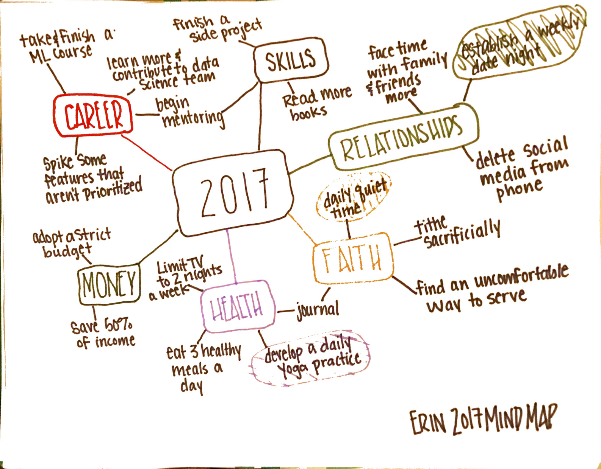

2017 Goals
02.28.2017
This year, I decided to make a mind map of my 2017 goals. After a few years of trying “resolutions”, the resolutions always made me feel like I was supposed to start out 100% and there was no room for error. A goal seems more attainable, and it is a little more forgiving. I am working towards a lot of different goals and I need the flexibility to not get it right all the time, or else I will just quit and do none of it.
I found the mind map for yearly goals idea on linkedin from a Google career coach. It was a really fascinating article (especially since I have learned the massive benefits of pedagogy with mind maps and how applicable it is in personal and professional growth).
I have used mind maps in education classes in college (in my stint of being an almost math teacher before I found my love for computer science) to develop lesson plans, and I have used them in industry when we were coming up with a new architecture for our front end. In both areas they were extremely helpful, so why not use them for my own personal goals?
So - here is a photo of my mind map!

I have a few focus areas that have a lot of overlap. I highlighted my top 3 goals (because…with 20 goals it can feel hard to know where to start).
I chose my colors strategically (also because I had some pretty colorful markers). Broken down by category:
Relationships
earthy green, like the Pantone color of the year - which resembles new beginnings. This is perfect for my 2017 in relationships because it’s the year I marry Mike (my awesome fiancé), which will bring potentially one of the biggest new beginnings ever.
My main focus for relationship is to develop a weekly date night with Mike. We just want to get in the habit of having an “us” night while we are still really flexible with time. When we have kids or more commitments it will become harder to establish later on, but if we are in the habit we hope it will become a comfortable “normal”.
Besides that - I decided that social media is a total time suck. I deleted facebook, twitter, pinterest, and instagram (except for Ellie’s account…I can’t sacrifice my dog’s internet stardom for 2017 goals..) from my phone already, and I have already noticed myself reaching for my phone and unlocking it for no reason at all. I put it in the relationships category (as opposed to health, although it applies to both) because the times I noticed myself reaching for my social media was when I was with my friends, family, or Mike. These relationships are far more important to me than any other happenings that might be going on online without me.
I also resolved to facetime my family more when possible. Since I live ~5 hours driving from my parents and ~2 hours from my sister, ~5 hours by plane to some of my best friends, keeping in touch remotely is necessary. Normally I have done this via a quick text every once and a while and calling my mom about every day. But when I think about how happy it makes me to facetime with people when they call me, I decided that why not just spend 10 minutes looking into the eyes (digital…through the iphone camera…but whatever) of my loved ones and giving them a peek into my life that day. This concept is crucial for remote workers in industry - let your teammates see your face so you don’t become the “voice behind the computer” - why shouldn’t we apply it to our day to day lives?
Faith
golden yellow. Yellow represents many things like happiness and joy. Gold (to me) represents all things fancy. I thought about neither of those things picking yellow for Faith. It was a no brainer for me - I have a deep optimism for where God is taking me in my relationship with Him this year, and that optimism is reflected in yellow.
My main goal for 2017 is to develop a daily quiet time in the mornings. I love to have leisurely mornings where I spend time reading my bible and reflecting on the day ahead, and my days are so fulfilled and focused when I put that time in at the beginning. In industry (and most things…really) there is the analogy of the big rocks and smaller rocks fitting into a jar. In order to make them all fit, you can’t start with the smaller items, you must put the larger ones in first. I want to begin using this not only in prioritizing my work, but prioritizing how I spend my time.
My other faith related goals include serving where I’m uncomfortable, tithing sacrificially, and journalling. I am truly blessed to have a lot of built in “gifts” (aka singing) which I love to use as a service to my church. I also kind of feel like it’s a major cop out and I have other areas that I could really pour into people, I just haven’t found it yet. Tithing sacrificially is something that I care a lot about. The pastor at my church, Tom, feels really passionate about tithes (which I think is awesome) - he wrote a book on finances and preaches on this topic every year. I have always tithed, but I really believe that it should feel like a sacrifice, and not just a set-it-forget-it bill like everything else is in the age of technology. I’m not sure what it will look like, maybe it will be physically writing a check and dropping it in the offering plate, maybe it will be giving more, maybe it will be a non-financial tithe of my time and skills. These are my least well-formed goals because I’m confident with the way God works he will show me loud and clear how I can work on these areas of my life.
Health
light purple. Mostly because purple is my favorite and I want my health to be my favorite. Also because purple is calming and I think I need a less intense approach to health than the normal kick-butt-workout-eat-lettuce-diet thing.
My biggest goal for 2017 is developing a daily yoga practice. This is pretty self explanatory, yoga benefits are awesome, I will be super healthy mentally and physically, and it’s just all around good for you. My other huge goal is to eat 3 healthy meals a day. Right now, I’m just working on the “3 meals a day” part (whoops, adulting fail), and working for a startup that’s fully stocked with snacks becomes dicey when I realize I ate a package of peanuts and peanut butter crackers for lunch 4 days in a row.
I also decided to cut down on my TV intake. Similar to social media, TV became something that was always happening when I was home. No matter what was on or how much I hate watching diners drive ins and dives, I was ALWAYS watching it. WHY??!? So I decided to limit it to 2 nights a week so I can have my weekly bachelor (don’t judge) and a night of food network. This will free up a bunch of time that I will need to accomplish the other stuff on this list!
Money
green, because cash monaaayyyy.
Straightfoward savings goals (which I inherently need a budget in order to reach the savings goals). Starting that with buying 0 new clothes all year. If there is one thing I don’t need it is new clothing. I am confident I could go 3 months without doing laundry - it’s sickening.
Career
red - because I want to kick ass in 2017
For those of you who don’t know me, I’m a software engineer for a startup called Zoomdata in Reston, VA. It’s awesome and there are so many things I’m excited about in the next year. One important goal I have is to start talking to some people who want features that aren’t prioritized by product (support, solutions, etc) and start looking into what it would take to implement them. Sometimes the features that customers want the most are super simple to add, so why not just take a few hours one night and help our sales team win a new contract, or make an exiting customer really happy? I think that would be awesome (obviously for my career visibility-wise), but also being able to have that impact and use my skills to improve the day to day work of someone else is what I do software for.
Other things
- mentor - not sure how, not sure when, not sure who, but I have experience as a female software engineer, a child of a single parent for most of my life, a Christian, a math teacher dropout, so I know I have plenty of room to teach and impact people for the better, I am prioritizing finding those people and those ways this year!
Take a machine learning course (which I already looped Mike into because my accountability for finishing online courses leaves something to be desired).
Learn more parts of our product that I haven’t had a chance to contribute to yet (aka become an expert at everything…)
read more because I want to read books again. I am a lover of analog books. My mom got annoyed at me last week when I polluted her amazon shopping cart with The Skimm’s what to read from 2016 with wine pairings. She told me to just order one at a time so I actually finish, to which I responded “but I pick out my books based on the feel and smell on the pages”.
Finishing a side project is also high up on my list. My github commit log is sparse…
Obviously we are a couple months into 2017 and (as always) it’s really easy to fall off of the wagon. Positivity is key, and small steps. It is impossible to start doing all of these things at once, so I’m trying not to be too hard on myself for not being perfect.